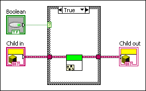
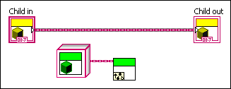
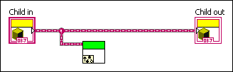
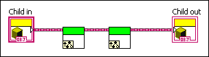
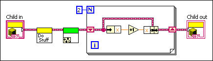

This dynamic dispatch VI does not unconditionally invoke the Call Parent Method node
This dynamic dispatch VI overrides a VI defined by an ancestor class. You set a requirement in the ancestor class that all overriding VIs must invoke the Call Parent Method node. In order to ensure that the Call Parent Method node is always invoked every time the VI is called, the following requirements must be fulfilled:
The Call Parent Method node cannot be inside any structure nodes.

This VI is broken because the Call Parent Method node is inside a structure node. Structure nodes can be used to sometimes skip calling the parent or may result in multiple calls to the parent. To prevent this, the node is required to be outside of all structure nodes.
The dynamic dispatch front panel terminal input must connect to the dynamic dispatch input of the Call Parent Method node.

This VI is broken because although the Call Parent Method node is invoked, it does not use the data that comes from the dynamic dispatch front panel terminal input.
Any dynamic dispatch outputs of the Call Parent Method node must connect to any dynamic dispatch front panel terminal outputs on the diagram.

This VI is broken because the results of the Call Parent Method node do not propagate to the dynamic dispatch front panel terminal output.
There must be only one Call Parent Method node on the diagram.

This VI is broken because it makes multiple calls to the Call Parent Method node.
You can correct this error by creating a VI that makes a single, unconditional call to the parent VI.

In this VI, the data is propagated to that call from the dynamic dispatch front panel terminal input to the dynamic dispatch front panel terminal output.